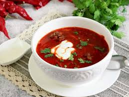

Рецепт борща
Вернуться

- Вода 1.5л
- Свинина/говядина 500г
- Свёкла 2шт.
- Морковь 1шт.
- Лук репчатый 2шт.
- Подсолнечное масло 4-5 ст.л.
- Щепотка лимонной кислоты
- Томатная паста 2 ст. л.
- Белокачанная капуста 300г.
- Картофель 4шт.
- Лавровый лист 1-2 шт.
- зубчик чеснока 1шт.
- Сварите бульон: налейте в кастрюлю воду, поместите туда мясо на кости (так борщ будет вкуснее) и поставьте на средний огонь. При закипании снимите пену. Затем накройте бульон крышкой и варите на медленном огне полтора часа.
- Подготовьте зажарку: вымойте свеклу, морковь и лук, очистите их, затем свеклу можно натереть на крупной терке, а морковь — на средней; лук нарежьте небольшими кубиками.
- Налейте в сковороду масло. Обжарьте свеклу, морковь и лук на медленном огне в течение пяти минут, затем добавьте лимонную кислоту, сок лимона или укусу. Так борщ станет красным и приобретет кислинку.
- Жарьте овощи еще пять минут, затем добавьте томатную пасту. Перемешайте и оставьте свеклу, морковь, лук репчатый и томат-пасту на медленном огне еще на пять минут.
- Начинайте собирать борщ. Достаньте из кастрюли мясо и оставьте остывать, в это время засыпьте в процеженный бульон нашинкованную капусту, добавьте картофель, нарезанный соломкой или кубиками.
- После этого нужно отделить мясо от кости, нарезать кубиками и вернуть в кастрюлю.
- Выложите в кастрюлю зажарку (свеклу, морковь, лук репчатый, томатную пасту) и перемешайте. Добавьте соль, перец черный молотый и другие приправы по вкусу, варите еще пять-семь минут.
- За пару минут до готовности добавьте зелень, немного измельченного чеснока или молотой гвоздики. Оставьте борщ настаиваться под крышкой в течение пяти- десяти минут.
Поздравляю, теперь у вас есть борщ!
Вы можете съесть его вместе с друзьями и семьей
Или в крысу, никому не сказав
Афигет! Всего 63 ккал на 100 грамм типо как это! Афигет! Диета -ккалории ураа!